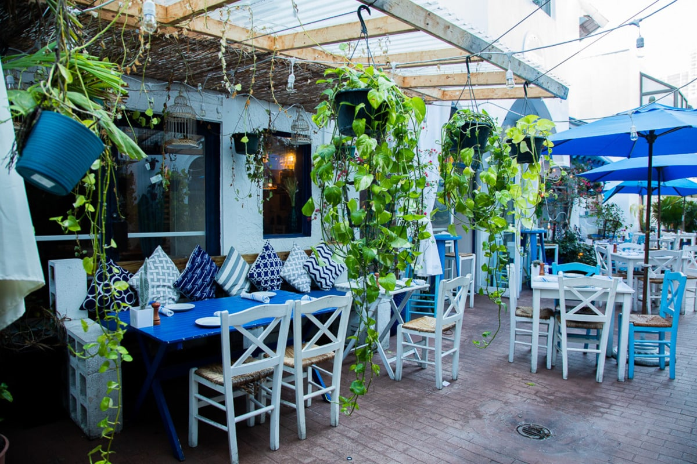

Persi's Greek Seafood
Seafood, the Greek Way
About Us

Welcome to Persi's Greek Seafood, where the bounty of the sea meets the flavors of Greece. Named for Persi, the legendary Greek sea god and son of Poseidon, our restaurant celebrates fresh seafood, vibrant Mediterranean flavors, and the warmth of Greek hospitality. Whether you're enjoying a feast worthy of the gods or simply gathering with friends, Persi's invites you to experience Seafood, the Greek Way.
Visit Our Website